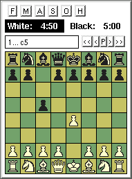
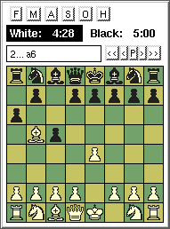
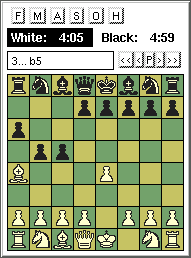

Many people these days depend on Bayesian filters to protect them from the ever present email scourge that is spam. Unlike older technologies, these programs' claim to fame is that they learn the spam patterns automatically, and more importantly, learn personalized spam (bad) and ham (good) email patterns.
Like many others, I wrote a Bayesian filter to protect me from unwanted email, which I called dbacl. My implementation functions as a Unix command line text classifier, with special email support, and can be used with procmail.
People are often astonished at how well statistical mail filtering works after they first try it, and it's tempting to imagine that such programs actually understand the emails being delivered, rather than merely matching patterns.
Now chess has always been a popular gauge of intelligence that everyone can understand, so if we put all these ideas together, then the question "Can a Bayesian spam filter play chess?" seems like a fun experiment with a lot of appeal.
Let's put down some ground rules: This experiment will test a real spam filter, not a specially designed chess program. It won't aim to beat Deep Thought (I wouldn't know where to start, and I have a feeling this could be difficult anyway ;-), but it will aim to show signs of "intelligence", or we won't claim success. Finally, since dry tables and graphs are no fun, a theoretical proof of concept is not enough: the spam filter must really play chess in a way that everyone can see, and try out at home.
The account below is designed so that you can follow and duplicate it by yourself. All you need is a Unix compatible computer. You'll have to open a terminal and be ready to type shell commands. All shell commands below are preceded by % to indicate the prompt, but you don't type the '%'. Instructions are fairly detailed, and various scripts can be downloaded when needed, but it helps if you're familiar with the shell. Ask a friend if you need help.
Important: You must follow these instructions if you want to actually play chess against the spam filter. You must also download some training games and teach the filter beforehand. Running the scripts alone is not enough. The instructions below have been tested to work with the GNU utilities and bash.
Start by making a directory to keep all the workings in one place.
% mkdir chess % cd chess
The first thing we have to do is obtain a (preferably large) collection of chess games that we can learn.
Not being an expert, I started off by browsing the web for likely keywords. It became soon apparent that a large collection of free games is available electronically in something called the PGN format. So I ended up downloading all the files available from Chessopolis and placing them into a subdirectory.
% mkdir zipfiles % cd zipfiles % ls 100-pg.zip can92-pg.zip gmcom3pg.zip krp-pg.zip swede2pg.zip 4queenpg.zip cp8687pg.zip irish-pg.zip lonepine.zip ten-pg.zip acbul-pg.zip cp8891pg.zip italy-pg.zip maxg-pgn.zip trap-pg.zip bril-pg.zip croat-pg.zip kbp-pg.zip minis-pg.zip wchamppg.zip brit60pg.zip denm-pg.zip knp-pg.zip pca9395.zip brit70pg.zip gmcom1pg.zip kp-kp-pg.zip sams-pg.zip cal-pg.zip gmcom2pg.zip kqp-pg.zip storm-pg.zip
Now that we have a collection, let's look at a typical game, say from sams-pg.zip:
% zcat sams-pg.zip | head -15 [Event "?"] [Site "Active Chess Championship, Kuala Lumpur (Malays"] [Date "1989.??.??"] [Round "?"] [White "Anand Viswanathan (IND)"] [Black "Sloan Sam"] [Result "1-0"] [ECO "C57"] 1. e4 e5 2. Nf3 Nc6 3. Bc4 Nf6 4. Ng5 Nxe4 5. Bxf7+ Ke7 6. d3 Nf6 7. Bb3 d5 8. Nc3 Bg4 9. f3 Bf5 10. f4 Bg4 11. Qd2 h6 12. fxe5 Nxe5 13. Qe3 Kd6 14. d4 Nd3+ 15. Qxd3 Qe7+ 16. Be3 Re8 17. Nf7+ Qxf7 18. O-O c6 19. Bf4+ Kd7 20. Be5 Be7 21. Rae1 Rhf8 22. Nxd5 cxd5 23. Ba4+ Kd8 24. Qc3 Bb4 25. Qxb4 Re6 26. c4 Rb6 27. Qa5 Bc8 28. c5 1-0
The trouble with data collections is that they are never exactly in the format we want. The chess game is obviously the bit at the bottom, while the text in square brackets looks quite useless to teach our filter.
Looking at the game itself, the numbers obviously count the moves, while the actual symbols that follow just seem like noise. But look more closely, and each move is actually followed by two expressions, one for each player.
In chess, the White player always starts first, and if you know that a chess board's columns are marked by letters, and the rows are marked by numbers, then e4 is a square on the board. The capital letters such as B, N, Q, K probably stand for Bishop, kNight, Queen and King. Of course, if you get stuck, you might just want to read the PGN format specification instead of guessing.
So now we know that each player's moves are separated by spaces, and that the numbers ending in a dot are just there to help people read the moves, and can be ignored just like the text in brackets with the names of the players etc. The real game information could be simply written like this:
e4 e5 Nf3 Nc6 Bc4 Nf6 Ng5 Nxe4 Bxf7+ Ke7 d3 Nf6 Bb3 d5 Nc3 Bg4 f3 Bf5 f4 Bg4 Qd2 h6 fxe5 Nxe5 Qe3 Kd6 d4 Nd3+ Qxd3 Qe7+ Be3 Re8 Nf7+ Qxf7 O-O c6 Bf4+ Kd7 Be5 Be7 Rae1 Rhf8 Nxd5 cxd5 Ba4+ Kd8 Qc3 Bb4 Qxb4 Re6 c4 Rb6 Qa5 Bc8 c5 1-0
dbacl is a text classifier. It reads words and builds a probability model from their frequencies. It can also look at pairs of words, triples, etc. up to 7. The tokens it looks at can be up to 30 characters long. These limitations are technical and would take too long to explain, but are useful to know up front.
What happens when dbacl classifies a text is that it computes the probability of seeing the text naturally occurring under the model. This is how spam filtering works: we build two models, one for spam and one for good emails, and then dbacl checks which model probability is higher for every incoming email.
Before we go on, make sure that dbacl is available. You'll need version 1.11 at least, so the easiest way is to download the program from its homepage. Place the dbacl-1.11.tar.gz file in your chess directory.
% cd .. % tar xfz dbacl-1.11.tar.gz % mv dbacl-1.11 dbacl % cd dbacl % ./configure && make && make check % cd ..
For chess, we first want to learn a model from many, many games. But then what? If we play an actual game, we'll end up with another piece of text that looks like the game above, but it will be incomplete. And we want dbacl to choose each move for the side it plays.
Now dbacl doesn't know the rules of chess, in fact anybody would be hard pressed to recognize that the text above is actually a game played on a board with wooden or plastic pieces. Anybody who has never heard of PGN of course.
What dbacl can do is choose. So here's what we will do: we take an incomplete game, and we add one extra (half) move at the end ourselves. We repeat this for all possible legal moves at that point. We'll get nearly identical partial games whose only difference is the last expression. We'll ask dbacl to work out the probabilities of each partial game under its model. And then we'll pick the most likely partial game.
We know that dbacl can tell us if a piece of text is typical for a model, and in turn a model is learned by reading many examples together. So if a pattern occurs very often in the games being learned, then such a typical pattern will be recommended by dbacl. And if the pattern is rare then dbacl will recommend it rarely.
But we want dbacl to win. So we want it to recommend the kind of things winners often do. So when dbacl plays White, it must learn a model from games where White wins, and if dbacl plays Black, then its model must be from games where Black wins.
At least that's a good first assumption. Sometimes, strong players lose a game against weaker players, and if dbacl learns this type of game, then it will pick up bad habits from the weaker player. But we'll assume that most games the better player wins. Also, if we learn to play by studying games from terrible players, then we'll pick up bad habits no matter what. But this is for later, or we'll never get anywhere.
Unfortunately, we now have work to do. We must split our thousands of sample games into White-Win (1-0) and Black-Win (0-1). And what to do about draws (1/2-1/2)? We can put them in both categories or just ignore them.
The files I downloaded are zipped MS-DOS files called *.PGN whose lines end in "\r\n" instead of ending in "\n", which is the Unix convention.
% cd zipfiles % for f in *.zip; do unzip $f; done % mkdir ../gamefiles % mv *.PGN ../gamefiles % cd ..
After inspecting a few *.PGN files, it's clear that a typical game takes several lines to write out fully, but the lines in between are either empty or contain all sorts of comments and useless information which must be scrubbed. We can do this by recombining the lines of a game into a single long line, and since all games start with a "1.", any lines left that don't start this way can be thrown away.
% cd gamefiles % cat *.PGN | sed -e 's/\r//g' \ | sed -e :a -e '$!N;s/\n\([a-hKQNBRO0-9]\)/ \1/;ta' -e 'P;D' \ | sed -e 's/^ *//' \ | grep '^1\.' \ > allgames.txt
What we now have is a big file allgames.txt which contains very long lines where each line is a single game. In the PGN format, the end result is marked at the end of the game, so it is easy for us to sort the games by throwing away the lines which either contain 1-0 (White wins) or 0-1 (Black wins). We also remove the move numbers which we don't need anymore.
% cat allgames.txt | grep -v '0-1' | sed 's/[0-9]*\.[ ]*//g' > WhiteWinDraw.txt % cat allgames.txt | grep -v '1-0' | sed 's/[0-9]*\.[ ]*//g' > BlackWinDraw.txt % cat allgames.txt | grep '1-0' | sed 's/[0-9]*\.[ ]*//g' > WhiteWin.txt % cat allgames.txt | grep '0-1' | sed 's/[0-9]*\.[ ]*//g' > BlackWin.txtLet's see how many games we've got:
% wc -l *.txt 46245 allgames.txt 26809 BlackWinDraw.txt 14913 BlackWin.txt 31332 WhiteWinDraw.txt 19436 WhiteWin.txt 138735 totalAll right, around 15-20 thousand winning games of each type. That should give dbacl something to read!
Remember, each game is on its own line. I'm going to leave the final scores at the end of each line where they are, as they are harmless (they can't occur in the middle of a game in progress). Let's learn the models:
% cd .. % ./dbacl/src/dbacl -T text -l ./WhiteWinDraw -e alnum -L uniform -j -w 2 -H 20 ./gamefiles/WhiteWinDraw.txt % ./dbacl/src/dbacl -T text -l ./BlackWinDraw -e alnum -L uniform -j -w 2 -H 20 ./gamefiles/BlackWinDraw.txt
The most important option here is "-w 2", which tells dbacl that it must pick up single words as well as word pairs. We'll see later if that's a good idea. If all went well, then you should have two files in your chess directory.
% ls -lh *Win* -rw-r----- 1 laird laird 3.2M 2005-06-24 17:16 BlackWinDraw -rw-r----- 1 laird laird 3.2M 2005-06-24 17:15 WhiteWinDraw
Now let's build the engine. This is where we'll cheat
take advantage of the wonderful world of open source.
Remember that what we want to do is take a PGN game that's in progress, and let dbacl complete the next move by picking all possible legal next moves and adding them in turn to the current game, then we let dbacl compute the most probable game under its model. We don't really know if dbacl's model is a good one for chess, and let's not even think about competing with Deep Thought here, but this procedure will at least give us a way to pick the move.
Unfortunately, computing legal moves is straightforward but tedious, so I looked around the internet for something useful, and found the SAN Toolkit. This is an old freeware toolkit for chess which does everything we want, even though it was last updated in 1993 and probably no longer state of the art. It's written in C and we have to compile it, but most importantly we can use it directly in a Unix shell environment. Download it and place it in the chess directory.
% untar xfz san.tgz % cd SAN % cp SAN_DOC/Makefile SAN_SRC % cd SAN_SRC % make % cd ../..
The documentation for this program is a little wanting, but it's not too hard to figure out, and the source code helps. Everything is calculated by the program san, which accepts commands. We'll write a script which accepts a PGN partial game and one of the dbacl categories we learned, and outputs the "best" move, meaning what dbacl thinks is closest to the category that was learned.
Let's try those ideas out before we proceed. We'll need a test PGN file.
% cat > test.pgn 1. e4 c5 2. Nf3 e6 3. d3 Nc6The cat commands waits until you press CTRL-D to finish. Let's first ask the san program for a list of legal moves.
% echo -ne "svop verb namd nabd napr\nlfer test.pgn\nenum 1\n" \ | ./SAN/SAN_SRC/san > test.legal 2>&1 % head -10 test.legal : : : Welcome to the SAN Kit. Revised: 1993.05.16 Bd2 : 1 Be2 : 1 Be3 : 1 Bf4 : 1 Bg5 : 1 Bh6 : 1 Kd2 : 1
Okay, this looks promising! There are some pieces of text we'll have to remove, but the possible first moves are all there (the listing is cut after 10 lines). Let's build the game line.
% cat test.pgn | sed 's/[0-9]*\.[ ]*//g' > test.gameline % cat test.gameline e4 c5 Nf3 e6 d3 Nc6
Next, we complete this gameline with each possible move:
% cat test.legal | grep '^.* : 1$' | cut -f 1 -d ' ' | \ while read move; do echo `cat test.gameline` $move done > test.complete % head -10 test.complete e4 c5 Nf3 e6 d3 Nc6 Bd2 e4 c5 Nf3 e6 d3 Nc6 Be2 e4 c5 Nf3 e6 d3 Nc6 Be3 e4 c5 Nf3 e6 d3 Nc6 Bf4 e4 c5 Nf3 e6 d3 Nc6 Bg5 e4 c5 Nf3 e6 d3 Nc6 Bh6 e4 c5 Nf3 e6 d3 Nc6 Kd2 e4 c5 Nf3 e6 d3 Nc6 Ke2 e4 c5 Nf3 e6 d3 Nc6 Na3 e4 c5 Nf3 e6 d3 Nc6 Nbd2
And of course, let's check what dbacl thinks of this:
% cat test.complete | ./dbacl/src/dbacl -n -c ./WhiteWinDraw -f 1 > test.scores % cat test.scores WhiteWinDraw 53.88 e4 c5 Nf3 e6 d3 Nc6 Bd2 WhiteWinDraw 52.93 e4 c5 Nf3 e6 d3 Nc6 Be2 WhiteWinDraw 52.16 e4 c5 Nf3 e6 d3 Nc6 Be3 WhiteWinDraw 53.11 e4 c5 Nf3 e6 d3 Nc6 Bf4 WhiteWinDraw 52.88 e4 c5 Nf3 e6 d3 Nc6 Bg5 WhiteWinDraw 54.64 e4 c5 Nf3 e6 d3 Nc6 Bh6 WhiteWinDraw 55.32 e4 c5 Nf3 e6 d3 Nc6 Kd2 WhiteWinDraw 54.82 e4 c5 Nf3 e6 d3 Nc6 Ke2 WhiteWinDraw 54.55 e4 c5 Nf3 e6 d3 Nc6 Na3 WhiteWinDraw 57.48 e4 c5 Nf3 e6 d3 Nc6 Nbd2 WhiteWinDraw 52.07 e4 c5 Nf3 e6 d3 Nc6 Nc3 WhiteWinDraw 54.69 e4 c5 Nf3 e6 d3 Nc6 Nd4 WhiteWinDraw 53.83 e4 c5 Nf3 e6 d3 Nc6 Ne5 WhiteWinDraw 60.95 e4 c5 Nf3 e6 d3 Nc6 Nfd2 WhiteWinDraw 56.18 e4 c5 Nf3 e6 d3 Nc6 Ng1 WhiteWinDraw 54.51 e4 c5 Nf3 e6 d3 Nc6 Ng5 WhiteWinDraw 55.05 e4 c5 Nf3 e6 d3 Nc6 Nh4 WhiteWinDraw 52.88 e4 c5 Nf3 e6 d3 Nc6 Qd2 WhiteWinDraw 53.56 e4 c5 Nf3 e6 d3 Nc6 Qe2 WhiteWinDraw 53.83 e4 c5 Nf3 e6 d3 Nc6 Rg1 WhiteWinDraw 48.60 e4 c5 Nf3 e6 d3 Nc6 a3 WhiteWinDraw 49.86 e4 c5 Nf3 e6 d3 Nc6 a4 WhiteWinDraw 49.73 e4 c5 Nf3 e6 d3 Nc6 b3 WhiteWinDraw 49.77 e4 c5 Nf3 e6 d3 Nc6 b4 WhiteWinDraw 48.51 e4 c5 Nf3 e6 d3 Nc6 c3 WhiteWinDraw 49.23 e4 c5 Nf3 e6 d3 Nc6 c4 WhiteWinDraw 47.56 e4 c5 Nf3 e6 d3 Nc6 d4 WhiteWinDraw 49.77 e4 c5 Nf3 e6 d3 Nc6 e5 WhiteWinDraw 48.33 e4 c5 Nf3 e6 d3 Nc6 g3 WhiteWinDraw 50.00 e4 c5 Nf3 e6 d3 Nc6 g4 WhiteWinDraw 49.23 e4 c5 Nf3 e6 d3 Nc6 h3 WhiteWinDraw 49.86 e4 c5 Nf3 e6 d3 Nc6 h4
First, you'll note that each line contains the current game, but ends with one of the legal moves. Just before each game sequence, there is a score for that sequence, and since the sequences are nearly identical, the scores are nearly identical too.
In the world of dbacl, these scores are the negative logarithm (base 2) of the probability of the sequence, based on the model WhiteWinDraw. It's best to think of these scores as a distance away from the category model, so the line with the smallest score is the most likely. If you want to know what probability each sequence has, it's 1/(2^54.73) etc., which is pretty close to zero! But that's normal with these kinds of models.
So what's the best move? Simply sort the lines in increasing order by score and print out the first line:
% cat test.scores | sort -k 2 -n | head -1 WhiteWinDraw 47.56 e4 c5 Nf3 e6 d3 Nc6 d4Remember, dbacl recommends what it thinks most of the games it has learned would do. We can take a peek at the effect of each half move on the score for the first line of test.complete by using dbacl's debugging switch:
% head -1 test.complete
e4 c5 Nf3 e6 d3 Nc6 Bd2
% head -1 test.complete | ./dbacl/src/dbacl -nv -c ./WhiteWinDraw -f 1 -d
# categories: WhiteWinDraw
# format: avg_score * complexity
20.25 * 0.5 []e4[](1)
2.91 * 1.0 []e4[]c5[](1)
8.82 * 1.5 []c5[](1)
4.55 * 2.0 []c5[]Nf3[](1)
7.65 * 2.5 []Nf3[](1)
3.15 * 3.0 []Nf3[]e6[](1)
5.71 * 3.5 []e6[](1)
3.21 * 4.0 []e6[]d3[](1)
5.48 * 4.5 []d3[](1)
4.34 * 5.0 []d3[]Nc6[](1)
5.83 * 5.5 []Nc6[](1)
4.31 * 6.0 []Nc6[]Bd2[](1)
5.75 * 6.5 []Bd2[](1)
The scores we saw earlier are obtained by multiplying the average by the
complexity, but dbacl internally works with nats, not bits,
so 5.75 * 6.5 / ln(2) = 53.9. Since here we just want to see the tokens that are being
used, these values aren't important. The most important thing to see is that
there are contributions from single half moves as well as pairs of half moves,
and the score balances them all.
Chess without a board is not as much fun as chess with an actual board. If we really want to claim that dbacl can play chess, then we need to make it work with something like GNU XBoard so it can play against people. Before we go on, you'll have to make sure this program is installed. It comes standard with most GNU/Linux distributions, for example on Debian you can type as root:
% apt-get install xboard
A real chess engine that works with XBoard must implement the Chess Engine Communication Protocol. This is a bit tedious, so I prepared one earlier. Save it as a file named dce-basic.sh in your chess directory, or type it yourself from the listing below. Note that I've just created enough code to play a simple game without undo, force, switch sides or board setup. In other words, the only thing you can do is start a new game, and play the moves, and dbacl must play Black.
% cat > dce-basic.sh
#!/bin/bash
# This script functions as an incomplete chess engine for XBoard.
DBACL=./dbacl/src/dbacl
SAN=./SAN/SAN_SRC/san
TMP=.
DCE=dce-basic
SANOK="no"
PGN="$TMP/$DCE.current.pgn"
GAMELINE="$TMP/$DCE.current.gameline"
SCORES="$TMP/$DCE.current.scores"
ENGINEMOVE="$TMP/$DCE.current.emove"
SANOUT="$TMP/$DCE.current.stdout"
SANERR="$TMP/$DCE.current.stderr"
SIDE="black"
MOVENOW="no"
CATFILE="./BlackWinDraw"
trap "" SIGTERM
trap "" SIGINT
function exec_san() {
rm -rf $PGN.new $SANOUT $SANERR
echo -ne "svop namd nabd napr\nlfer $PGN\n$1\nsfer $PGN.new" \
| "$SAN" > "$SANOUT" 2> "$SANERR"
if grep Error "$SANOUT" > /dev/null; then
echo "Error (illegal move): $cmd"
return 1
else
mv $PGN.new $PGN
fi
return 0
}
function do_engine_move() {
if exec_san "enum 1"; then
# legal moves are in $SANOUT
cat "$PGN" \
| sed -e 's/\r//g' \
| sed -e :a -e '$!N;s/\n\([a-hKQNBRO0-9]\)/ \1/;ta' -e 'P;D' \
| sed -e 's/^ *//' \
| grep '^1\.' \
| sed 's/[0-9]*\.[ ]*//g' \
| sed 's/ \*.*$//' \
> "$GAMELINE"
# make all completions and let dbacl decide
cat "$SANOUT" \
| grep '.* : 1$' \
| cut -f 1 -d ' ' \
| while read move; do
echo "`cat $GAMELINE` $move"
done \
| "$DBACL" -n -c "$CATFILE" -f 1 \
> "$SCORES"
if [ `cat "$SCORES"| wc -l` = "0" ]; then
# no moves left, game over!
# the gameline contains the result
echo "`cat $GAMELINE | sed 's/^.* //'` {Play again?}"
return 0
else
# pick best scoring move
cat "$SCORES" \
| sort -k 2 -n \
| head -1 \
| sed -e 's/^.* //' \
> "$ENGINEMOVE"
if exec_san "`cat $ENGINEMOVE`"; then
echo "move `cat $ENGINEMOVE`"
return 0
fi
fi
fi
return 1
}
function do_reset() {
rm -f $PGN
touch $PGN
exec_san ""
}
function do_move() {
if [ "$SANOK" != "yes" ]; then
echo "Illegal move (you must use SAN): $1"
echo "Error (cannot play): $1"
fi
if exec_san "$1"; then
MOVENOW="yes"
fi
}
while read cmd; do
case "$cmd" in
xboard)
echo "feature san=1 done=1"
;;
"accepted san")
SANOK="yes"
;;
quit)
exit 0
;;
new)
do_reset
;;
variant*)
echo "Error (only standard chess please): $cmd"
;;
[a-h][x1-8]*)
do_move "$cmd"
;;
[KQBNRP][xa-h]*)
do_move "$cmd"
;;
O-O*)
do_move "$cmd"
;;
analyze)
echo "Error (unknown command): $cmd"
;;
*)
# ignore other commands
echo "Error (command not implemented): $cmd"
;;
esac
if [ "$MOVENOW" = "yes" ]; then
if do_engine_move; then
MOVENOW="no"
else
echo "Error (engine blew up): kaboom"
exit 1
fi
fi
done
The source code above is not very complex. The last part reads commands one line at a time and calls various functions depending on the command. Then, if it is Black's turn, it calls the do_engine_move function. The current state of the game is constantly updated in the dce-basic.current.pgn file which is created in your chess directory, the list of scores computed by dbacl is in the file dce-basic.current.scores, and the final best engine move is saved in the file dce-basic.current.emove.
Once you have this engine script in your chess directory, make sure it has execute permissions, and then you can try it out with XBoard.
% chmod +x ./dce-basic.sh % xboard -fcp ./dce-basic.sh
It's much more fun to read this account if you actually try this out with XBoard yourself, so I won't say what happens next or how well dbacl does as a chess player. The discussion with answers continues in the next section so consider this a spoiler warning. Don't peek!
When playing chess on XBoard, don't forget that dce-basic.sh is incomplete. All you can do is play White, and restart the game whenever you want. No fancy menu choices. However, you can follow what's going on at any time by looking at the temporary files named dce-basic.current.* which are placed in your chess directory.
Okay, you've tried your first game against dbacl, and it wasn't very impressive. In fact, it was practically random play! Note that it isn't entirely random - dbacl doesn't pick for example a random pawn on first move but slightly prefers positions towards the middle of the board. What's going on?
There can be only one culprit, and it's the model we used for learning, namely the "-w 2" switch. To understand this, let's look at the game line again:
% cat test.gameline e4 c5 Nf3 e6 d3 Nc6
Now dbacl learns by reading single words (ie half moves) and consecutive pairs of words, then building a model out of these frequencies. This means that there is nothing in the model which makes for example the third word Nf3 depend on the first one e4 except through the second one c5, which could well be anything. In other words, consecutive moves by one colour are largely independent, which is why it feels that dbacl has no strategy.
We can force dbacl instead to learn 3, or better yet 4 consecutive words as a pattern. That should link e4 with Nf3 and even e6. Let's try it (this could take a few minutes to run):
% ./dbacl/src/dbacl -T text -l ./BlackWinDraw -e alnum -L uniform -j -w 4 -H 20 ./gamefiles/BlackWinDraw.txt dbacl:warning: table full, some tokens ignored - try with option -h 21Oh, oh. Here's a problem that we might as well get out of the way now. Looking at pairs, triples, etc. (these are called n-grams) uses a lot of memory because of all the possible combinations. That's one reason why long n-grams aren't that popular in machine classification. Here dbacl ran out of space and told us so, but still tried to learn something. But we don't want a skewed model, so we'll increase the allowable space and relearn. You will have to be mindful of this when you experiment.
% ./dbacl/src/dbacl -T text -l ./BlackWinDraw -e alnum -L uniform -j -w 4 -H 22 ./gamefiles/BlackWinDraw.txt % xboard -fcp ./dce-basic.sh
It's hard to see a big improvement with "-w 4", which is not very surprising if you think about it. Let's try with "-w 7", which for technical reasons is the maximum dbacl can handle. But before we do this, I want to briefly mention the work of C.E. Shannon.
One of Shannon's famous experiments concerns the approximation of English. He asked what would sentences look like if letters or words were picked randomly from a book. Here is what he found:
(Single letters) OCRO HLI RGWR NMIELWIS EU LL NBNESEBYA TH EEI ALHENHTTPA OOBTTVA NAH BRL.
(Pairs of letters) ON IE ANTSOUTINYS ARE T INCTORE ST BE S DEAMY ACHIN D ILONASIVE TUCOOWE AT TEASONARE FUSO TIZIN ANDY TOBE SEACE CTISBE.
(Triples of letters) IN NO IST LAT WHEY CRATICT FROURE BIRS GROCID PONDENOME OF DEMONSTURES OF THE REPTAGIN IS REGOACTIONA OF CRE.
(Single words) REPRESENTING AND SPEEDILY IS AN GOOD APT OR COME CAN DIFFERENT NATURAL HERE HE THE A IN CAME THE TO OF TO EXPERT GRAY COME TO FURNISHES THE LINE MESSAGE HAD BE THESE.
(Pairs of words) THE HEAD AND IN FRONTAL ATTACK ON AN ENGLISH WRITER THAT THE CHARACTER OF THIS POINT IS THEREFORE ANOTHER METHOD FOR THE LETTERS THAT THE TIME OF WHO EVER TOLD THE PROBLEM FOR AN UNEXPECTED.
So can we expect this also with chess moves? Let's try it. Because of the heavy memory requirements when "-w 7" is used (and the long time it takes), we'll learn a smaller game collection BlackWin.txt (but we keep the BlackWinDraw category name so we don't have to modify dce-basic.sh).
% ./dbacl/src/dbacl -T text -l ./BlackWinDraw -e alnum -L uniform -j -w 7 -H 23 ./gamefiles/BlackWin.txt
Before we start playing, how can we be sure that dbacl will match patterns in the way we expect? Let's try the debug switch like we did before on our test gameline:
% head -1 test.complete | ./dbacl/src/dbacl -nv -c ./BlackWinDraw -f 1 -d
# categories: BlackWinDraw
# format: avg_score * complexity
63.73 * 0.1 []e4[](1)
-9.44 * 0.3 []e4[]c5[](1)
15.46 * 0.4 []c5[](1)
6.91 * 0.6 []e4[]c5[]Nf3[](1)
-6.53 * 0.7 []c5[]Nf3[](1)
5.07 * 0.9 []Nf3[](1)
4.17 * 1.0 []e4[]c5[]Nf3[]e6[](1)
1.31 * 1.1 []c5[]Nf3[]e6[](1)
-9.96 * 1.3 []Nf3[]e6[](1)
-2.22 * 1.4 []e6[](1)
-0.86 * 1.6 []e4[]c5[]Nf3[]e6[]d3[](1)
-1.00 * 1.7 []c5[]Nf3[]e6[]d3[](1)
-3.88 * 1.9 []Nf3[]e6[]d3[](1)
-9.31 * 2.0 []e6[]d3[](1)
-3.80 * 2.1 []d3[](1)
-2.59 * 2.3 []e4[]c5[]Nf3[]e6[]d3[]Nc6[](1)
-1.58 * 2.4 []c5[]Nf3[]e6[]d3[]Nc6[](1)
-2.16 * 2.6 []Nf3[]e6[]d3[]Nc6[](1)
-2.99 * 2.7 []e6[]d3[]Nc6[](1)
-5.49 * 2.9 []d3[]Nc6[](1)
-2.12 * 3.0 []Nc6[](1)
0.51 * 3.1 []e4[]c5[]Nf3[]e6[]d3[]Nc6[]Bd2[](1)
2.92 * 3.3 []c5[]Nf3[]e6[]d3[]Nc6[]Bd2[](1)
5.13 * 3.4 []Nf3[]e6[]d3[]Nc6[]Bd2[](1)
7.16 * 3.6 []e6[]d3[]Nc6[]Bd2[](1)
6.37 * 3.7 []d3[]Nc6[]Bd2[](1)
3.35 * 3.9 []Nc6[]Bd2[](1)
5.84 * 4.0 []Bd2[](1)
Perfect! Clearly dbacl is picking up sequences up to seven long. Now let's make a proper check:
% xboard -fcp ./dce-basic.sh
If you've tried the case "-w 7", then you may have noticed a true improvement over the previous attempts. But while dbacl no longer plays quite so randomly, the overall game seems touch and go. Openings are sometimes recognized, but there's no strategy and frequently dbacl seems to forget what it was doing. Also, there aren't many attempts to protect the 8th row from even direct attacks.
We can explain this type of behaviour with what we already know about the dbacl model. Since one chess move needs two words in PGN notation, then even with "-w 7", the longest connected word sequences are just over 3 chess moves long. These sequences aren't under dbacl's control since you play White, so when they break, this causes confusion and another potential sequence is followed. That's why dbacl seems to lose interest.
Another problem is that dbacl's model has no concept of opening, middle and endgame. If row 8 is attacked, it has no way of knowing if there are pawns which protect the piece, and whether there is room to move away, because the training patterns are averaged over many games. We'll come back to this observation later.
So far we've treated half-moves as fundamental, but perhaps it makes more sense to base our models on full moves? Since our engine always plays Black, then the completed gamelines will always have an even number of words. Moreover, the '-w 7" model shall truly be seven chess moves long, not three and a half. Let's try it. We can combine pairs of moves by replacing the space between them with underscores as follows (combine_half_moves.sh).
% cat test.gameline e4 c5 Nf3 e6 d3 Nc6 % cat > combine_half_moves.sh #!/bin/sh sed -e 's/$/ Z/' -e 's/ \([^ ]* *[^ ]\)/_\1/g' -e 's/[ ]*Z$//' % chmod +x combine_half_moves.sh % cat test.gameline | ./combine_half_moves.sh e4_c5 Nf3_e6 d3_Nc6
Now we have to adapt the training sets, and change the code of dce-basic.sh slightly. I've called this modification dce-1.sh
% cd gamefiles % cat BlackWinDraw.txt | ../combine_half_moves.sh > BlackWinDraw-1.txt % cat BlackWin.txt | ../combine_half_moves.sh > BlackWin-1.txt % cd ..
Naturally, we must learn the new dataset. You might want to make a cup of coffee while you wait.
% ./dbacl/src/dbacl -T text -l ./BlackWin-1 -e graph -L uniform -j -w 7 -H 23 ./gamefiles/BlackWin-1.txt
One last safety check and we'll be ready:
% cat test.gameline | ./combine_half_moves.sh | ./dbacl/src/dbacl -nv -c ./BlackWin-1 -f 1 -d
# categories: BlackWin-1
# format: avg_score * complexity
128.93 * 0.1 []e4_c5[](1)
-11.83 * 0.3 []e4_c5[]Nf3_e6[](1)
37.71 * 0.4 []Nf3_e6[](1)
17.15 * 0.6 []e4_c5[]Nf3_e6[]d3_Nc6[](1)
-20.69 * 0.7 []Nf3_e6[]d3_Nc6[](1)
7.60 * 0.9 []d3_Nc6[](1)
Okay, it seems to be working.
% chmod +x dce-1.sh % xboard -fcp ./dce-1.sh
Compared to the earlier attempts, this change seems to have improved dbacl's tactics. However, we still have much aimless behaviour in the middle and end games. How do we address this?
Our biggest problem is possibly that dbacl is blind. It simply doesn't know or care about the true configuration of the board pieces, like a real chess engine would. Instead, everything it knows are the likely sequences of moves that it found in the training games.
Computer chess is an area which has been studied extensively for a long time, and while we could try to apply these methods to our little engine, we wouldn't learn anything new about chess or about dbacl. So instead, I am only going to try the kind of things that would not be out of place in spam filtering.
Deep in the dawn of spam filtering, people devised keyword rules to send unwanted email to the trash. Even today, this is a popular method to detect, for example, those messages which contain "VIAGRA" in the subject line, and automatically pick an action to take. Maybe we can detect some fixed text pattern in the gameline and use this to override the normal dbacl scores? Let's look at a typical game.
% head -1 ./gamefiles/BlackWin.txt | fmt d4 Nf6 c4 e6 Nf3 b6 g3 Ba6 Qc2 c5 Bg2 Bb7 O-O Be7 Nc3 cxd4 Nxd4 Bxg2 Kxg2 Qc7 Qd3 O-O e4 d6 f3 Nbd7 b3 a6 Be3 Qb7 Rfd1 Rfe8 Bf2 Bf8 Nc2 Rec8 Ne3 Rab8 a4 Ne5 Qd2 Rc7 Rac1 Rbc8 Qe2 Nc6 Be1 Nd7 g4 Nc5 Qc2 Nb4 Qb1 Be7 Ne2 Nc6 Bc3 Ne5 Ng3 Bg5 Ngf1 Bf4 Bxe5 Bxe5 Rd2 Bf4 Rcd1 b5 axb5 axb5 Ra2 Nd7 Qd3 Nc5 Qc2 h6 Ra5 bxc4 bxc4 Nd7 Qe2 Ne5 Rb5 Qa6 Rb2 Nxc4 Nxc4 Qxc4 Rd3 Qc5 Ne3 Qg5 Qf2 Rc3 Rxc3 Rxc3 Nf1 Kh7 Rc2 Qe5 Ng3 Be3 Qe2 g6 Nf1 Bf4 Ng3 Kg7 Qf2 Be3 Qe2 Qd4 Nf1 Bf4 Ng3 Rxc2 Qxc2 Qd2+ Qxd2 Bxd2 Ne2 g5 Nd4 Kf6 Nb3 Bc3 Kf2 Ke5 Ke3 Bb4 Nc1 Bc5+ Ke2 Bg1 Nd3+ Kd4 h3 Kc3 Nc1 Bh2 Nd3 Bf4 Nf2 d5 exd5 exd5 Nd3 Be5 Nc1 Kd4 Nd3 Bf4 Nb4 Ke5 Nd3+ Kd6 Nb4 Ke6 Nd3 Bd6 Nb2 Ke5 Nd3+ Kf6 Nb2 Ke6 Nd3 h5 Nf2 f5 Nd1 fxg4 fxg4 hxg4 hxg4 Kf6 Nb2 Ke5 Kf3 Kd4 Nd1 Kd3 Nf2+ Kd2 Nh3 Be7 Nf2 Bc5 Nh1 Bd6 Nf2 Bf4 Nh1 Be3 Ng3 Kd3 Nh1 Bg1 Ng3 Kd2 Nf5 d4 Ng3 d3 0-1
Besides the normal moves that represent a change in position, the most obvious feature is that some of the moves above also contain an 'x', which means that this is a capturing move. Interesting! One of the problems with the dbacl engine so far is that often, an opportunity for capturing White's pieces is simply ignored. Can we devise a keyword rule which triggers on 'x' to force dbacl to capture an available piece instead of ignoring it?
Let's try it: first we'll need a gameline which includes an 'x' type move, since our previous test.gameline file doesn't. Note that we'll forget temporarily the underscore trick we used in the previous section, just to keep things simple at first.
If you look at the full game listed two paragraphs ago, you'll see that the last full move on the first line is "Nxd4 Bxg2", so if we use this line and delete the last full move, then the possible completions will contain at least "Nxd4" and we have a suitable test case.
% cat > test2.pgn
1. d4 Nf6 2. c4 e6 3. Nf3 b6 4. g3 Ba6 5. Qc2 c5 6. Bg2 Bb7 7. O-O Be7 8. Nc3 cxd4
% echo -ne "svop verb namd nabd napr\nlfer test2.pgn\nenum 1\n" \
| ./SAN/SAN_SRC/san > test2.legal 2>&1
% cat test2.legal | grep '^.* : 1$' | cut -f 1 -d ' ' | \
while read move; do
echo `cat test2.gameline` $move
done > test2.complete
% cat test2.complete | ./dbacl/src/dbacl -n -c ./WhiteWinDraw -f 1 > test2.scores
There are 48 different potential moves in the test2.scores file, and what we are interested in is the score (column 2) and the potential half move (column 21).
% cat test2.scores | sort -k 2 -n | cut -f 2,21 -d ' ' | head -25 129.08 h3 129.35 a4 129.89 a3 129.89 b3 129.89 e3 133.09 Qg6 133.36 Bf4 133.36 Bg5 133.36 Qa4 133.36 Rb1 133.36 Rd1 133.86 Be3 133.86 Bh3 133.86 Nb5 133.86 Ne4 133.86 Nh4 133.86 Qb3 133.86 Qd3 133.86 Qe4 137.87 Nxd4 154.68 e4 154.96 c5 155.77 b4 155.81 h4 155.95 g4
I've only listed the first 25 moves by score but it's clear that dbacl's model puts "h3" as the most likely move, and "Nxd4" way down in 20th position! Let's extract the capturing moves.
% cat test2.scores | grep 'x[^ _]*$' | sort -k 2 -n WhiteWinDraw 138.73 d4 Nf6 c4 e6 Nf3 b6 g3 Ba6 Qc2 c5 Bg2 Bb7 O-O Be7 Nc3 cxd4 Nxd4 Bxg2 Nxd4 WhiteWinDraw 162.90 d4 Nf6 c4 e6 Nf3 b6 g3 Ba6 Qc2 c5 Bg2 Bb7 O-O Be7 Nc3 cxd4 Nxd4 Bxg2 Qxh7
Since there is more than one possible capturing move, the engine has to decide what it wants to play. By sorting the capturing moves by their scores, we let dbacl tell us which move it prefers. Obviously, "Nxd4" is this preferred candidate. It's also possible that for some gamelines, there is no legal capturing move; we'll have to use the full list of scores as before in that case.
Finally, we must decide how we are going to integrate this special handling of capturing moves into our chess engine. In spam filters, a keyword rule typically stops all other tests from happening afterwards, because the rule is trusted to override other decisions. Here, this means that we first score all the capturing moves if there are any, and use the best one regardless of other options. It's only if there are no capturing moves that we look at the remaining possibilities.
By using the explanations above, you can modify dce-basic.sh yourself, or try out dce-2.sh, which implements both the 'x' and "underscore" tricks together.
% chmod +x dce-2.sh % xboard -fcp ./dce-2.sh
Quite a change in behaviour! The engine no longer ignores capture opportunities, but our method has made it greedy. dbacl is now so greedy that there is no tension left in the game, and since it doesn't know the value of each piece, it often makes bad bargains.
Unfortunately, there isn't enough data in the PGN format to let dbacl read off easily the value of an exchange. If you look at the full training game listed earlier, you'll see many moves marked with an 'x', such as "cxd4" "Nxd4" "Bxg2" "Kxg2", but none of these moves identifies the type of the captured piece, only the piece doing the capturing. It's certainly possible to deduce the relevant piece by replaying all the moves on an imaginary board, but then our chess engine would no longer act like a spam filter. Keeping an imaginary board is roughly the equivalent of understanding the actual meaning of an email.
So dbacl, as a chess-playing-spam-filter, is limited to two things: it can limit the risk of an exchange, and limit the frequency of exchanges.
To limit risk, if there are several capture scenarios available, it can always prefer to capture with the least valued piece (since the type of the piece doing the capturing is known by looking at the move), but note that this doesn't help when there is exactly one capture move possible.
Limiting the frequency of exchanges would make dbacl less greedy and refuse to capture pieces all the time. As we noted earlier, dbacl doesn't naturally tend to capture pieces, so we must find a balance.
We can force a capture when there are two or more capture opportunities. Together with the risk limitation idea, these types of captures are then performed by lower value pieces in relative terms.
Clearly, there are endless other things we can try, but there is a price to pay. As capture rules become heavier and more complex, the original patterns learned by dbacl from the training games lose their importance. The dbacl chess engine becomes a hybrid, part ordinary chess engine and part Bayesian text classifier.
I've implemented the two rules above in dce-3.sh. Try it out now.
% chmod +x dce-3.sh % xboard -fcp ./dce-3.sh
We've come a long way, so let's go back to the initial question. "Can a spam filter play chess?". To answer this question affirmatively, we need at least one example which can't be explained by random play. While dbacl undoubtedly makes some strange chess decisions sometimes, let's look at the following game fragment played against dce-3.sh:
  
Clearly, dbacl picked up the pawn defensive moves from the games archive, as this succession of moves is very unlikely to be random (all moves are on the same side of the board, and none of the moves are capturing moves, so cannot be explained by capture heuristics which partially override dbacl's natural choices).
So dbacl has definitely learned something about chess, at least in some tactical situations, and can probably hold its own against an average three year old. Mission accomplished!
Well, the title of this section is "randomized play", and there is one more thing to do. So far, the dbacl chess engine is deterministic: when faced with identical White moves, it will always play the same way. This gets boring very fast. What we would like is more randomized play, but which still uses the dbacl scoring system.
For randomized play, we can think of the scores as equivalent probabilities. Then we can pick not just the highest probability (lowest score) move as we've done so far, but instead any move according to its probability. Let's look again at the file test.scores that we created earlier:
% head -5 test.scores WhiteWinDraw 53.88 e4 c5 Nf3 e6 d3 Nc6 Bd2 WhiteWinDraw 52.93 e4 c5 Nf3 e6 d3 Nc6 Be2 WhiteWinDraw 52.16 e4 c5 Nf3 e6 d3 Nc6 Be3 WhiteWinDraw 53.11 e4 c5 Nf3 e6 d3 Nc6 Bf4 WhiteWinDraw 52.88 e4 c5 Nf3 e6 d3 Nc6 Bg5
As I already mentioned, the dbacl model probabilities are related to these scores as follows: Prob[Bd2] = 2^(-53.88), Prob[Be2] = 2^(-52.93), etc. Unfortunately, these are all very small probabilities and we can't easily represent them as floating point numbers once the gameline becomes much longer, let alone pick them at random. So first, let's subtract the biggest common factor: If we sort the scores, then the top score is the factor we want:
% cat test.scores | sort -k 2 -n > test.scores.prob % head -1 test.scores.prob WhiteWinDraw 47.56 e4 c5 Nf3 e6 d3 Nc6 d4
We'll write an awk program to do the randomizing, so here's the first part:
% cat > renorm.awk
#!/usr/bin/awk -f
{
if( cf == 0 ) {
cf = $2
}
print $2 - cf, $0
}
% cat test.scores.prob | awk -f ./renorm.awk | head -5
0 WhiteWinDraw 47.56 e4 c5 Nf3 e6 d3 Nc6 d4
0.77 WhiteWinDraw 48.33 e4 c5 Nf3 e6 d3 Nc6 g3
0.95 WhiteWinDraw 48.51 e4 c5 Nf3 e6 d3 Nc6 c3
1.04 WhiteWinDraw 48.60 e4 c5 Nf3 e6 d3 Nc6 a3
1.67 WhiteWinDraw 49.23 e4 c5 Nf3 e6 d3 Nc6 c4
Okay, the first column gives the modified score and the rest is the original line. Since these are binary exponents rather than actual probabilities, we'll use a rejection sampler to pick the correct line and print it out. Here's the full randomizer:
% cat > randomizer.awk
#!/usr/bin/awk -f
{
if( cf == 0 ) {
cf = $2;
}
score[NR] = $2 - cf;
line[NR] = $0;
}
END{
# randomizer seeded by time of day
# don't use more often than once per second.
srand();
while(1) {
x = int(rand() * NR) + 1;
t = -log(rand());
if( log(2) * score[x] < t ) {
print line[x];
break;
}
}
}
% cat test.scores.prob | ./randomizer.awk
WhiteWinDraw 48.33 e4 c5 Nf3 e6 d3 Nc6 g3
% cat test.scores.prob | ./randomizer.awk
WhiteWinDraw 47.56 e4 c5 Nf3 e6 d3 Nc6 d4
Awk's randomizer is seeded by the time of day, so if you repeatedly run the randomizer.awk script in a fast loop, it will always output the same result. But for chess against people, we don't really care about the quality of the randomness involved.
I've added the randomizer to the final version of the chess engine, dce.sh, which also contains a few other improvements. If you feel like experimenting further with the dbacl chess engine, that script is probably the best starting point. Enjoy!
% chmod +x ./dce.sh % xboard -fcp ./dce.sh
It's time to conclude this investigation and see what we've learned. The original question was "Can a spam filter play chess?". Clearly, the answer to this is yes, but making it play well is not so easy.
A crucial aspect I haven't touched on here are chess tournaments. The only way to reliably judge potential improvements in an engine is to make it play other engines with known strengths. Not all types of tournaments are appropriate for the dbacl chess engine - for example randomized initial positions and endgame puzzles are meaningless, because dbacl doesn't think ahead more than one half move, and it needs the full game history for matching patterns. Moreover, the fundamental behaviour is learned entirely from training sets. Thus dbacl's strength as a chess player is meaningless without reference to its training archive. However, if this archive is fixed, then incremental improvements to the algorithms can be evaluated in that context.
dbacl is able to learn some tactics simply by reading large collections of games. However, it seems that strategy is beyond its capabilities. Moreover, there are some fundamental limitations in treating a PGN format game like a text document: some information such as the values of exchanged pieces aren't easy to read off without keeping an imaginary board for replaying moves.
There are many ways to change the characteristics of the basic chess engine we've built here. Besides more complex capture heuristics, one can try to account for the length of the game (opening/middle/endgame), the difference in the number of pieces captured by each side, etc. Beyond that, the PGN gameline representation which we used here can be replaced with more informative symbol sequences. In principle, one could replace each move with a pictorial representation of the board such as FEN, but besides the added implementational complications, this causes difficulties because of dbacl's limit of 30 character tokens, and possibly statistical issues in recognizing similar but not identical board configurations.
Perhaps most interestingly overall, it should be remembered that dbacl doesn't think ahead like most chess engines do. Its successes and failures are almost entirely based on the historical record of the game as it develops and mimicry of training games, not at all on calculating moves and countermoves in the future.
Download the latest dbacl chess engine: dce.sh
After this essay was written, it appeared on slashdot. This resulted in some interesting comments and emails. I've selected some of them below and added some responses.
It's true that in the essay, the full game is scored from the beginning, but this is only for convenience. For the actual decisions, solely the last few moves matter (how many depends on the -w switch), and the extra score contributions from the beginning are identical for all possible choices, so cancel out in the final decision. The beginnings of the games could be cut away before scoring, but this would be more work and would make no difference in the way dbacl plays chess.
Other representations besides PGN are certainly possible and worth trying. Since dbacl learns patterns directly from input text, it is first necessary to convert the training games into such another representation, then the current game must also be available in this representation during play.
dbacl does not operate this way. It is not limited to matching known sequences which were seen in the training games, but instead predicts likelihoods for never before seen sequences from its model by generalization. There is no need for an infinite context of moves, the model is in fact learned from a limited number of training games, and once learned, it can handle any game sequence "creatively", since such a sequence is decomposed into known and unknown fragments and recombined through the rules of probability. The dbacl chess engine can also move "unexpectedly", either because the model differs from a player's expectation, or becasue of the randomization step explained at the end of the essay.
While it is true that in the essay, dbacl predicts the next move by examining the immediate past, there is nothing inherently impossible about predicting several moves ahead. With some work, the engine can be modified to generate all the game sequences which are two or more moves into the future, and dbacl will happily score each such sequence as well. However, the fundamental difficulty with chess is that the number of game sequences grows exponentially with the number of predicted moves, so the computational cost of predicting several moves into the future grows very quickly.
Perhaps a different way of saying this is that both spam filtering and this chess playing experiment exhibit common weaknesses. For example, currently the dbacl chess engine has difficulty adapting to the middle and end games. This is difficult because there is no simple boundary between the phases of a chess game. Similarly, general emails have a complicated structure but it can be hard to distinguish its semantic parts. A message can switch from being professional to personal etc. This weakness is hard to observe in spam filtering, but much easier to see in the chess experiment.
dbacl doesn't remember full trees, it picks up game fragments of a certain number of moves and uses these to analyze unknown and longer sequences using Bayesian theory. The openings are learned more quickly because everyone starts with the same initial board setup, and there are only a handful of very popular openings in training games.
This is a good comment. It's true that chess requires an understanding of the board positions, and the PGN format is very limited in this respect (however, the PGN sequence is indirectly equivalent to a full board representation, since it is possible to reconstruct the board from such a sequence). However, it does not follow that this approach must always perform badly in the middle game. Chess is a combination of both strategy and tactics, and tactical thinking is confined to a small number of consecutive moves, precisely what dbacl tends to pick up. A good tactician can play well in the middle game, even if he is a bad strategist.
This can be done by using an appropriate choice of representation. The PGN format is not the only possible format for representing chess. The FEN format represents the full board, and a hybrid representation could include any features of interest. One could represent each game as a sequence of FEN positions. dbacl has a limit on the length of words which makes using straight FEN impractical, but the positions could just as well be compressed by using a hash function.
Nice idea. Does anyone want to try?
This is an interesting criticism, but is problematic on inspection. What does it take to play chess? Since a game is defined as a sequence of legal moves, there is nothing optional about a legal move generator. Imagine if two people are playing chess, and one tries an illegal move. The opponent will point out the mistake and refuse to allow it. The first person will try again until a legal move is found. Statistically, dbacl could learn to distinguish legal from illegal moves in any one board position by observing enough training games, ie the illegal moves can be learned to have arbitrarily small probabilities. However, in a real game the opponent won't allow illegal moves, so dbacl would continue to generate moves until it obtains a legal move. Mathematically, this is equivalent to using a move generator like SAN, but using SAN is faster. Similar comments apply to the other criticisms.
This is correct. dbacl builds a statistical model from the training games. The model handles noise as appropriate via the rules of probability and the model assumptions. In other words, when a sequence of moves is analysed, it is decomposed into known subsequences and unknown subsequences, which are combined through a Bayesian weighting mechanism which depends on the model. In this way, all relevant training sequences, even if they only overlap partially, are used to predict the scores of a game.
This could be an interesting experiment. The chess engine presented in the essay is incomplete, it only plays Black, but with some work it can be completed. I don't know if playing against itself is a good idea. It might help to extract the likely moves, but it might also cause degeneration similar to incest.
This is an idea worth trying. However, if dbacl never sees an 'x' in the training games, then it will assign any move containing an 'x' during play a low probability, identical for all capturing moves. This would make it even more reluctant to capture pieces naturally, and give no way of choosing which pieces should be captured. A simple way to make things work correctly would be to remove all the 'x' from the training games and train on both the old games containing 'x', and the same games where the 'x' is missing.
It's possible. I only tried the simplest things in the essay, but that approach is very promising. You don't actually have to represent the full board state, for example you might also represent a slightly higher level state which tells things like the number and values of important pieces etc.
While I didn't do it in the writeup, it is certainly possible to generate more than a single move ahead and apply the same scoring method. In principle, up to 7 moves could be generated, although the exponential branching will always pose a practical problem just as in real chess engines. It's an interesting question however because it isn't obvious I think if this might help or not. It might help because it's a form of educated guessing where the opponent's moves are filled in from experience with a large collection of games, but it might not help because it would amount to wishful thinking, that the opponent behaves like in the training games. In the best case, it would amount to an effective doubling of the sequence length from 7 to about 14, since the calculations would involve all the overlapping 7-move (or less) sequences straddling the current move.